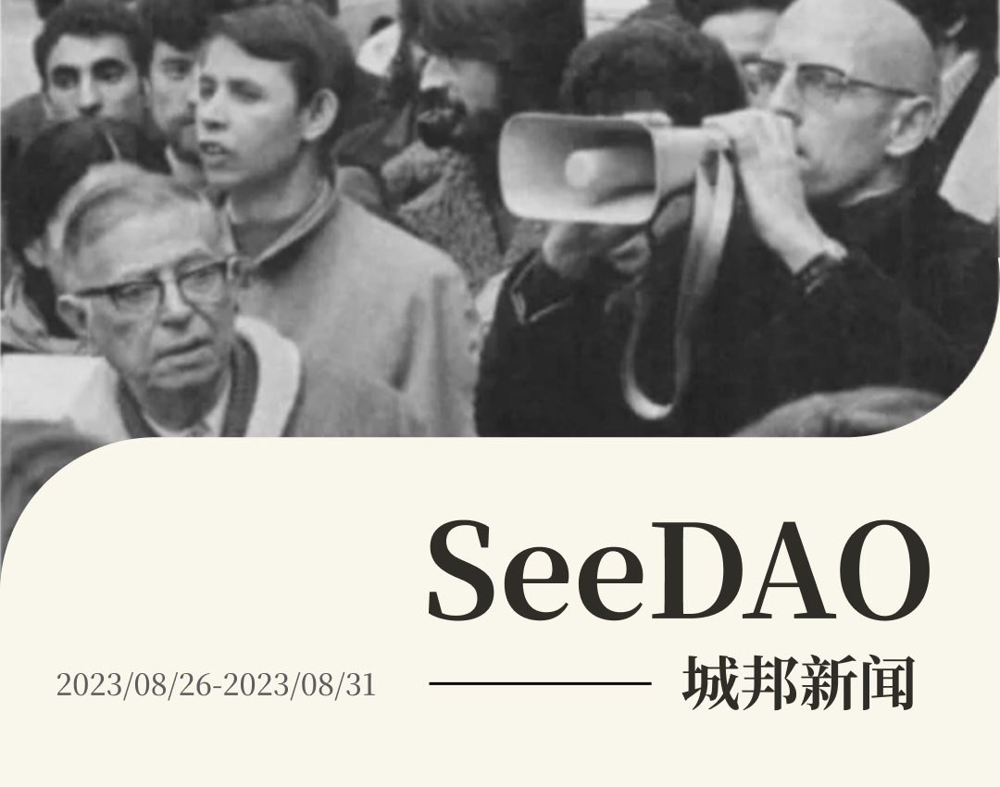
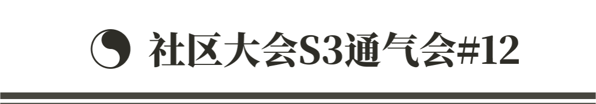
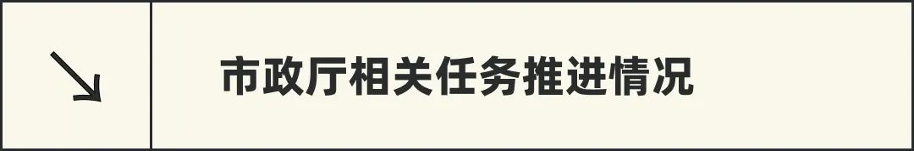

✍ 歪脖三观的第 14 篇原创， 来自 Web3小律《理想与现实：比特币的“狂野西进”与法律挑战》
🎀 SeeGIRLS｜Web3 Ta 声音「活在别人的影子里，你不累吗？」
✍ 翻译公会｜来自 Zhiwei 译文《如何启动一个 Imapct DAO》


✦ 项目和负责人
/ 决算数据复核
/ SGN mint 事项协调与推进
/ S4 节点事项协调与推进
/ 预算编制中
✦ 治理工程师
/ 节点共识大会协调
/ 公共岗位招募策划，实施
✦ SuperMod
/ 完成Mod小队提案和总体评估
/ 总结社区大会的反馈流程

✦ 已经完成重点项目包括：
/ AMA活动：SeeDAO x CIAN｜SeeDAO x AAAny
/ 项目合作：SeeDAO x WGG&Cutup｜SeeDAO x Knexus（AIGC 工作坊）｜SeeDAO x Ton foundation（TAPP宣发）｜SeeDAO x Rebase（Hacker House @Singapore）｜SeeDAO x Techub（crypto dream night 活动）｜SeeDAO x Amphi （Metale ”Amphi 杯”AI成长小说校对大赛；翻译公会评估中）｜SeeDAO x Tako&moledao （九月新加坡线下活动，唐晗参加）

✦ 公众号推送文章 10 篇
✦ 完善媒体指南｜增设 VI 设计手册
✦ 预估+调整S4媒体中心预算


✦ 新一届协调小组成员正式履新，和成员们进行了充分的沟通交流，收到了新的建议
✦ 来自 Zhiwei 的译文《如何启动一个 Impact DAO》
✦ 来自 Theseus 译文《从 FAANG 公司跳槽到加密领域的 4 个理由》
✦ 活动邀请：SeeDAO x Amphi （Metale ”Amphi 杯”AI成长小说校对大赛，整体评估中）

✦ 新一届协调人选举
✦ 问题交流：介绍了ZK-Compliance Oracle、Relayers的工作机制，以及围绕“为何选用Keyring、怎么避免MEV攻击”等问题展开交流

https://seedao.notion.site/6d2649c827b14c25999f9bd6978eb06b


比特币从一开始就不仅仅意味着电子现金，而是它所携带的信任机器，以及它能够为社会带来的更多变革。不过，比特币与区块链技术虽能将个人数据主权从中心化机构的数字牢笼中解放，但是政府对于加密资产的监管依然是一把悬在头顶的“达摩克利斯之剑”。

✦ Seed NFT 闭眼慧观 开图问世🔥
✦ “共画与非 ” SeeDAO新公共设施启动！预创作开始！
✦ SeeGIRLS｜Web3 她声音 “ 活在别人的影子里，你不累吗？”
✦ SeeDAO支持｜9月相约新加坡！Rebase HackerHouse in Singapore
文字记者| 华子
排版 | T1NG
审核 | Ines